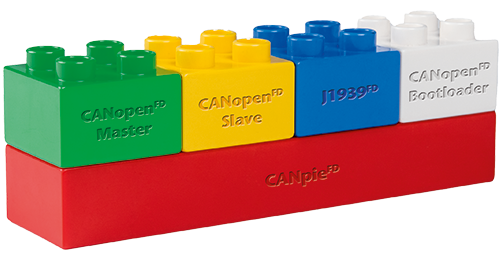

|
CANopen Slave Protocol Stack
Version 7.04.00
|
|
CANopen Slave Protocol Stack
Version 7.04.00
|
This is the documentation for the CANopen Slave protocol stack, developed by MicroControl GmbH & Co. KG.
The protocol stack supports both, classical CANopen as defined by the standards CiA 301 and CANopen FD as defined by the standard CiA 1301. The behavior can be selected during run-time.
The CANopen Slave protocol stack offers a variety of configuration options and forms the basis for controlling and monitoring complex CANopen networks. The functionality of the different CANopen services can be configured individually in order to achieve an optimal performance for different platforms and applications.
 | The CANopen Slave protocol stack runs on top of the CANpie FD hardware abstraction layer. The CANopen Bootloader, CANopen Master and J1939 protocol stacks can run in parallel on the same hardware platform.
|
The CANopen Slave API overview gives a detailed description to the functions of the protocol stack. The examples section explains sample code that is provided with the CANopen Slave protocol stack.
First steps to use the CANopen Slave protocol stack are explained inside the Getting started section.